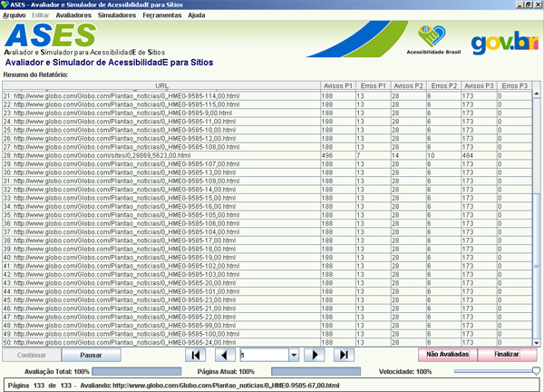

Tipo de Avaliação:
- Você pode escolher entre avaliar seguindo as regras do WCAG ou E-Mag.
Níveis a Avaliar:
- Nível 1: Avalia apenas 1 nível de diretório.
- Nível 2: Avalia apenas 2 níveis de diretório.
- Nível 3: Avalia apenas 3 níveis de diretório.
- Site: Avalia todas as páginas do site.
- Página: Avalia apenas a página indicada.
- Arquivo: Avalia apenas o arquivo desejado.
- Diretório: Avalia todas as páginas do diretório selecionado.
Nível de Prioridades:
- Prioridade 1: Pontos que os criadores de conteúdo Web devem satisfazer inteiramente. Se não o fizerem, um ou mais grupos de usuários ficarão impossibilitados de acessar as informações contidas no documento. A satisfação desse tipo de pontos é um requisito básico para que determinados grupos possam acessar documentos disponíveis na Web.
- Prioridade 2: Pontos que os criadores de conteúdos na Web deveriam satisfazer. Se não o fizerem, um ou mais grupos de usuários terão dificuldades em acessar as informações contidas no documento. A satisfação desse tipo de pontos promoverá a remoção de barreiras significativas ao acesso a documentos disponíveis na Web.
- Prioridade 3: Pontos que os criadores de conteúdos na Web podem satisfazer. Se não o fizerem, um ou mais grupos poderão se deparar com algumas dificuldades em acessar informações contidas nos documentos. A satisfação deste tipo de pontos melhorar o acesso a documentos armazenados na Web.
URL:
- Endereço do site que se deseja avaliar.

Resumo do Relatório:
- Continuar: Este botão é responsável por continuar uma avaliação previamente interrompida e salva (*.ASES), ou para recomeçar uma avaliação que tenha sido simplesmente pausada.
- Pausar: Serve para suspender uma avaliação. Para continuar de onde parou, basta clicar em "Continuar".
- Retroceder todas: Retrocede à primeira página da tabela de erros.
- Retroceder uma: Retrocede à página de erros imediatamente anterior.
- Drop down: Este drop down é um contador de páginas avaliadas. Clique sobre ele para localizar uma página específica.
- Avançar uma: Avançãa para a página subsequente a atual.
- Avançar todas: Avançãa ao final da avaliação, a última página avaliada.
- Não Avaliadas: Botão que apresenta um relatório de todas as páginas não avaliadas.
- Finalizar: Finaliza uma avaliação em andamento. O Usuário é perguntado se deseja salvá-la antes de terminá-la.
Barras de progresso:
- Avaliação Total: Exibe a porcentagem de quanto da página/sítio foi avaliado até o momento.
- Página Atual: Este se aplica a valiçãões com mais de uma página. Exibe a porcentagem a página que está sendo avaliada.
Barra de Velocidade: Através deste botão o usuário pode, se diminur a velocidade, liberar recursos do seu computador, em detrimento da velocidade de avalição. Geralmente usado quando se quer realizar várias tarefas simultaneamente, em conjunto com a avaliação de um sítio. Ela também limita a banda de downloading de páginas avaliadas pelo ASES, deixando o usuário navegar sem problemas se possuir conexões de baixa velocidade.

Relatório da URL: Exibe uma tabela contendo erros encntrado na URL referida.
Código Fonte:
- Código em Edição:
É exibido o código fonte editável, como um editor de HTML.
- Código Original:
Exibe o código original, apenas para comparação, pois este não é editável.
Abas de Erros e Avisos:
- Exibe erros e avisos encontrados no código em uma tabela. Os erros/prioridades variam de grau 1 a 3, dependendo da regra do W3C ou E-MAG que foi infringida. Para o usuário ter acesso ao erro/aviso encontrado basta clicar sobre o número corresponde à linha para ser levado, na tela do código fonte editável, até o erro.
- Colunas da tabela de erros/avisos:
- P.V.: Ponto de Verificação - Indica que regra do E-MAG/WCAG foi infringida.
- CASOS GERAIS: Uma breve descrição do erro encontrado.
- OCORRÊNCIAS: A quantidade de vezes que determinada regra foi infringida.
- LINHAS: As linhas que possuem erros. Ao clicar sobre elas, o usuário é levado até sua ocorrência no código.
Tela Anterior: Retorna à tela anterior a este avaliador.
Reverter: Recarrega o código original, sem edição alguma.
Saiba Mais: É um quadro de dicas e esclarecimentos a respeito de cada erro encontrado, de acordo com o E-MAG.